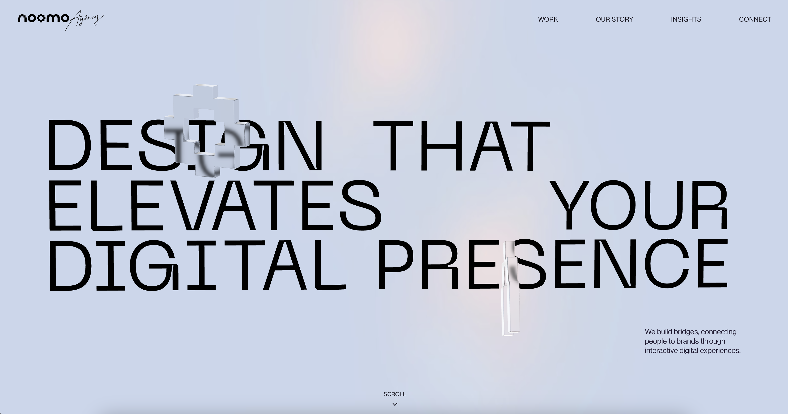
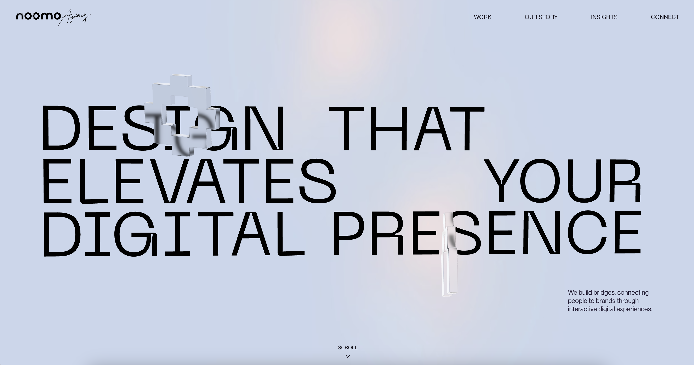
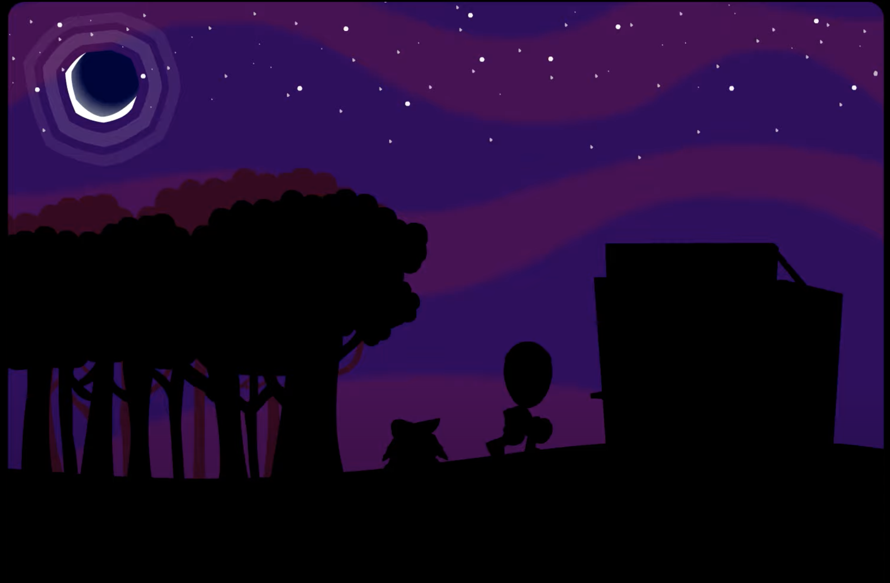

Neocities is one of my main sources of inspiration for my portfolio site. It’s a site where people can host their custom made personal websites, akin to Geocities from the late 90s.
Most sites on Neocities are not meant to be very professional looking. They are hobbyist projects, a place for people to showcase their works and own style.
One of the things I like about Neocities is the freedom it gives to the user. You can use any kind of design, any kind of layout, any kind of color scheme. It’s a place where you can be as creative as you want to be.
Another source of inspiration for my portfolio site is the Flash era of the internet. Flash was a multimedia platform that was widely used in the late 90s and early 2000s. It was used to create animations, games, and interactive websites.

Flash websites were known for their interactivity and animations. They were often very colorful and had a lot of movement. They were also known for their experimental designs and layouts.
One of the things I like about Flash websites is the sense of playfulness and creativity they had. They were not afraid to break the rules and try new things. They were a place for experimentation and innovation. I do miss Flash, but at the same time I don't miss propritary plugins and formats like it.
One of the great Flash sites was, and still is Homestar Runner.

Homestar Runner was a web series that was created in 2000 by Mike and Matt Chapman. It was known for its humor, its characters, and its use of Flash animation. It was also known for its website, which was full of interactive elements and hidden Easter eggs.
One of the things I like about Homestar Runner is the way it used the internet as a medium. It was not just a series that was put on the internet, it was a series that was made for the internet. It used the internet’s interactivity and multimedia capabilities to create a unique and engaging experience.
The night theme has taken inspiration from the look of the Halloween and 'Decemberween' episodes from Homestar Runner
§While it may not look as 'clean' or professional as many modern websites, it does allow me to develop my own style.
Right now I have found a middle ground between the two extremes, which are totally cartoony, or totally clean and modern.
There are many other portfolio sites that I like and take inspiration from. Some of them are very professional looking, some of them are very experimental, and some of them are a mix of both.
Neocities and Flash are two of my main sources of inspiration for my portfolio site. They are both known for their experimental designs, their interactivity, and their creativity. They are both places where you can be as creative as you want to be, and that’s what I want my portfolio site to be as well.
My portfolio site is a place for me to showcase my works and my own style. It’s a place for me to experiment and try new things. It’s a place for me to be as creative as I want to be.
It’s a place for me to be me.
Neocities. (n.d.). Retrieved from https://neocities.org/
Homestar Runner. (n.d.). Retrieved from https://homestarrunner.com/
Wikipedia. (n.d.). Retrieved from https://en.wikipedia.org/wiki/Adobe_Flash
Wikipedia. (n.d.). Retrieved from https://en.wikipedia.org/wiki/Neocities


{kind=link}
{kind=link}